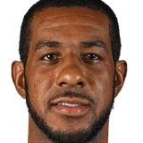

His best final NBA finish was #3 of 29, with the 2003-04 Indiana Pacers. In his 430 games for 5 teams over 7 seasons they went 200–230 (46.5%), −30 games under .500, with an average final finish of 14.3. The biggest one-season rise in his career: the Indiana Pacers went from #11 in 2002-03 to #3 in 2003-04.
Jump to: Record by opponent · Season by season · Teammate help
Compare Fred Jones with…
Suggested, same era and similar teammate help:
Final NBA finish, season by season
Title Finals Other playoffs Missed playoffs. #1 = champion; the dashed line is last place that season. Each point opens that season's final standings.
All 29 teams ranked in 2003-04, his best finish (#3)Teammate help
- Jermaine O'Neal9.04 seasons
 Metta World Peace8.53 seasons
Metta World Peace8.53 seasons Chris Bosh4.01 season
Chris Bosh4.01 season
Career
Career records (W–L, W − L, with and without) include 2026-27 games through Nov. 23, 2026; season counts and finishes are through 2025-26. Each card opens its board in the same scope. How we count.

Latest completed seasons
- 2008-09·LA Clippers·#28 of 3019–63 · Missed playoffs
- 2007-08·
 New York·#25 of 3023–59 · Missed playoffs
New York·#25 of 3023–59 · Missed playoffs - 2006-07·
 Toronto·#11 of 3047–35 · Lost in the first round 2–4 to
Toronto·#11 of 3047–35 · Lost in the first round 2–4 to  New Jersey
New Jersey
Season by season
Newest first; every header sorts. Final NBA finish is the team's rank among all teams that season (#1 = champion) and opens that season's standings. "Without him" uses the team-season window; the span line counts only the games between his first and last game for the team.
| 2008-09 | LA Clippers14th West | #28 of 30 | 19–63 23.2% | Missed playoffs | 52 of 82 | 11–41 21.2% | 8–22 26.7%span: 0–2, gap +21.2 | −5.5 |
| 2007-08 | #25 of 30 | 23–59 28.0% | Missed playoffs | 70 of 82 | 18–52 25.7% | 5–7 41.7%span: 5–7, gap −16.0 | −16.0 | |
| 2006-07 | #11 of 30 | 47–35 57.3% | Lost 1st round 2–4 | 39 of 82 | 17–22 43.6% | 14–3 82.4%span: 12–3, gap −36.4 | −38.8 | |
| 2006-07 | #24 of 30 | 32–50 39.0% | Missed playoffs | 24 of 82 | 8–16 33.3% | 0–2 0.0%span: 0–1, gap +33.3 | +33.3 | |
| 2005-06 | #14 of 30 | 41–41 50.0% | Lost 1st round 2–4 | 68 of 82 | 33–35 48.5% | 8–6 57.1%span: 4–5, gap +4.1 | −8.6 | |
| 2004-05 | #8 of 30 | 44–38 53.7% | Lost conf semis 2–4 | 77 of 82 | 40–37 51.9% | 4–1 80.0%span: 4–1, gap −28.1 | −28.1 | |
| 2003-04 | #3 of 29 | 61–21 74.4% | Lost conf finals 2–4 | 81 of 82 | 61–20 75.3% | 0–1 0.0%span: 0–1, gap +75.3 | +75.3 | |
| 2002-03 | #11 of 29 | 48–34 58.5% | Lost 1st round 2–4 | 19 of 82 | 12–7 63.2% | 36–27 57.1%span: 26–18, gap +4.1 | +6.0 |
On/off, starts and close games
From the lineup data, 1996-97 on. On/off is net points per 100 possessions with him on the floor minus off, a different unit from the win-rate gaps. Started and off the bench are team records in those games; close games are those within 5 points in the last 5 minutes with him on the floor.
| 2008-09 | LA Clippers | +7.1 | 2–19 9.5% | 9–22 29.0% | 6–10 37.5% |
| 2007-08 | +0.5 | 8–18 30.8% | 10–34 22.7% | 12–13 48.0% | |
| 2006-07 | −12.8 | 3–6 33.3% | 14–16 46.7% | 5–8 38.5% | |
| 2006-07 | −3.1 | 1–2 33.3% | 7–14 33.3% | 4–2 66.7% | |
| 2005-06 | −2.8 | 0–2 0.0% | 33–33 50.0% | 9–19 32.1% | |
| 2004-05 | −9.5 | 5–9 35.7% | 35–28 55.6% | 21–24 46.7% | |
| 2003-04 | −6.6 | 2–0 100.0% | 59–20 74.7% | 14–4 77.8% | |
| 2002-03 | −8.3 | 0–1 0.0% | 12–6 66.7% | 0–2 0.0% |
Teammate help by season
Two separate numbers per season, each with every teammate that adds to it. Help this season = Teammates Score points for honors won that season by teammates who shared a game with him. Help coming in = the same teammates' honors from the season before. How help works.
- 2008-09LA Clippers
 Eric Gordon All-Rookie 2nd0.12549 g
Eric Gordon All-Rookie 2nd0.12549 g
Help this season: 0.125 = 0.125 Eric Gordon
More: help coming in and other teammates
Help coming in (teammates' honors the season before): 1.25 = 1 Marcus Camby + 0.25 Al Thornton
Other teammates (no honors that season): Steve Novak 50 g, DeAndre Jordan 42 g, Al Thornton 41 g, Baron Davis 37 g, Marcus Camby 36 g, Brian Skinner 28 g, Mike Taylor 26 g, Zach Randolph 24 g, Mardy Collins 24 g, Ricky Davis 22 g, Alex Acker 17 g, Chris Kaman 16 g, Jason Hart 14 g, Cheikh Samb 9 g and 1 more
- 2007-08New YorkHelp this season: 0, no honored teammate
- 2006-07Toronto
Chris Bosh All-NBA 2ndAll-Star428 g
 Andrea Bargnani All-Rookie 1st0.2537 gJorge Garbajosa All-Rookie 1st0.2536 g
Andrea Bargnani All-Rookie 1st0.2537 gJorge Garbajosa All-Rookie 1st0.2536 g
Help this season: 4.5 = 4 Chris Bosh + 0.25 Andrea Bargnani + 0.25 Jorge Garbajosa
More: help coming in and other teammates
Help coming in (teammates' honors the season before): 1 = 1 Chris Bosh
Other teammates (no honors that season): Anthony Parker 39 g, Joey Graham 38 g, Radoslav Nesterovic 37 g, Jose Calderon 37 g, TJ Ford 33 g, Morris Peterson 30 g, Kris Humphries 28 g, PJ Tucker 15 g, Darrick Martin 14 g, Uros Slokar 4 g, Pape Sow 2 g
- 2006-07
 Portland
Brandon Roy ROYAll-Rookie 1st0.7519 g
Portland
Brandon Roy ROYAll-Rookie 1st0.7519 g
LaMarcus Aldridge All-Rookie 1st0.2515 gHelp this season: 1 = 0.75 Brandon Roy + 0.25 LaMarcus Aldridge
More: help coming in and other teammates
Help coming in (teammates' honors the season before): 0
Other teammates (no honors that season): Travis Outlaw 24 g, Jamaal Magloire 24 g, Sergio Rodriguez 24 g, Jarrett Jack 24 g, Martell Webster 24 g, Dan Dickau 21 g, Ime Udoka 17 g, Zach Randolph 11 g, Raef LaFrentz 11 g, Luke Schenscher 11 g, Jeremy Richardson 1 g
- 2005-06
 Indiana
Jermaine O'Neal All-Star140 gMetta World Peace All-Def 1st116 g
Indiana
Jermaine O'Neal All-Star140 gMetta World Peace All-Def 1st116 g Danny Granger All-Rookie 2nd0.12565 g
Danny Granger All-Rookie 2nd0.12565 g
Help this season: 2.125 = 1 Jermaine O'Neal + 1 Metta World Peace + 0.125 Danny Granger
More: help coming in and other teammates
Help coming in (teammates' honors the season before): 1 = 1 Jermaine O'Neal
Other teammates (no honors that season): Stephen Jackson 67 g, Sarunas Jasikevicius 63 g, Anthony Johnson 61 g, David Harrison 56 g, Jeff Foster 52 g, Austin Croshere 42 g, Eddie Gill 37 g, Scot Pollard 37 g, Jamaal Tinsley 32 g, Predrag Stojakovic 27 g, Samaki Walker 7 g, Jonathan Bender 2 g
- 2004-05Indiana
Jermaine O'Neal All-Star142 g
Help this season: 1 = 1 Jermaine O'Neal
More: help coming in and other teammates
Help coming in (teammates' honors the season before): 11 = 7 Metta World Peace + 4 Jermaine O'Neal
Other teammates (no honors that season): James Jones 70 g, Eddie Gill 68 g, Austin Croshere 68 g, Reggie Miller 63 g, Anthony Johnson 60 g, Jeff Foster 58 g, Stephen Jackson 46 g, Scot Pollard 46 g, David Harrison 41 g, Jamaal Tinsley 38 g, John Edwards 24 g, Dale Davis 22 g, Michael Curry 18 g, Marcus Haislip 9 g and 4 more
- 2003-04Indiana
Metta World Peace DPOYAll-NBA 3rdAll-StarAll-Def 1st772 gJermaine O'Neal All-NBA 2ndAll-Star477 g
Help this season: 11 = 7 Metta World Peace + 4 Jermaine O'Neal
More: help coming in and other teammates
Help coming in (teammates' honors the season before): 3.5 = 3 Jermaine O'Neal + 0.5 Metta World Peace
Other teammates (no honors that season): Jeff Foster 81 g, Reggie Miller 79 g, Al Harrington 78 g, Austin Croshere 76 g, Anthony Johnson 72 g, Scot Pollard 60 g, Jamaal Tinsley 51 g, Kenny Anderson 44 g, Jonathan Bender 21 g, Primoz Brezec 18 g, Jamison Brewer 13 g, James Jones 6 g
- 2002-03Indiana
Jermaine O'Neal All-NBA 3rdAll-Star319 g
 Brad Miller All-Star118 gMetta World Peace All-Def 2nd0.515 g
Brad Miller All-Star118 gMetta World Peace All-Def 2nd0.515 g
Help this season: 4.5 = 3 Jermaine O'Neal + 1 Brad Miller + 0.5 Metta World Peace
More: help coming in and other teammates
Help coming in (teammates' honors the season before): 3.375 = 3.25 Jermaine O'Neal + 0.125 Jamaal Tinsley
Other teammates (no honors that season): Jeff Foster 19 g, Al Harrington 19 g, Ron Mercer 19 g, Jamaal Tinsley 16 g, Erick Strickland 16 g, Reggie Miller 13 g, Primoz Brezec 10 g, Jonathan Bender 9 g, Austin Croshere 8 g, Jamison Brewer 4 g
Record against each opponent
- Best regular-season record against one franchise: 12–8 (60.0%) against the Brooklyn Nets in 20 games.
- Toughest regular-season record against one franchise: 10–12 (45.5%) against the Atlanta Hawks in 22 games.
- Most playoff series against one franchise: 2 against the Boston Celtics, 2–0 in series and 8–3 in games.
Regular season, through 2025-26 (2026-27 games not included): 430 games, 200–230, against 30 franchises.
Grouped by franchise (named as today); game lists keep each team's name that season. Filters and the tab are kept in the URL, so a filtered view can be shared.
| Games list | |||||||
|---|---|---|---|---|---|---|---|
| 22 | 10–12 | 45.5% | −2 | N/A | 2002-03 to 2008-09 | ||
| 21 | 10–11 | 47.6% | −1 | N/A | 2002-03 to 2008-09 | ||
| 20 | 12–8 | 60.0% | +4 | 0–1 (2–4 in games) | 2002-03 to 2008-09 | ||
| 18 | 8–10 | 44.4% | −2 | N/A | 2003-04 to 2008-09 | ||
| 18 | 8–10 | 44.4% | −2 | 0–2 (4–8 in games) | 2003-04 to 2008-09 | ||
| 18 | 10–8 | 55.6% | +2 | N/A | 2003-04 to 2008-09 | ||
| 18 | 10–8 | 55.6% | +2 | N/A | 2002-03 to 2008-09 | ||
| 17 | 7–10 | 41.2% | −3 | 2–0 (8–3 in games) | 2003-04 to 2008-09 | ||
| 16 | 12–4 | 75.0% | +8 | 1–0 (2–2 in games) | 2002-03 to 2008-09 | ||
| 16 | 9–7 | 56.2% | +2 | N/A | 2002-03 to 2008-09 | ||
| 16 | 8–8 | 50.0% | 0 | N/A | 2002-03 to 2008-09 | ||
| 15 | 6–9 | 40.0% | −3 | N/A | 2002-03 to 2008-09 | ||
| 14 | 3–11 | 21.4% | −8 | N/A | 2003-04 to 2008-09 | ||
| 14 | 6–8 | 42.9% | −2 | N/A | 2002-03 to 2008-09 | ||
| 14 | 3–11 | 21.4% | −8 | N/A | 2002-03 to 2008-09 | ||
| 13 | 7–6 | 53.8% | +1 | N/A | 2003-04 to 2008-09 | ||
| 13 | 7–6 | 53.8% | +1 | N/A | 2002-03 to 2007-08 | ||
| 13 | 7–6 | 53.8% | +1 | N/A | 2002-03 to 2008-09 | ||
| 13 | 1–12 | 7.7% | −11 | N/A | 2002-03 to 2008-09 | ||
| 13 | 8–5 | 61.5% | +3 | N/A | 2002-03 to 2008-09 | ||
| 12 | 9–3 | 75.0% | +6 | N/A | 2004-05 to 2008-09 | ||
| 12 | 5–7 | 41.7% | −2 | N/A | 2003-04 to 2008-09 | ||
| 12 | 8–4 | 66.7% | +4 | N/A | 2003-04 to 2008-09 | ||
| 12 | 7–5 | 58.3% | +2 | N/A | 2002-03 to 2008-09 | ||
| 11 | 3–8 | 27.3% | −5 | N/A | 2003-04 to 2008-09 | ||
| 11 | 3–8 | 27.3% | −5 | N/A | 2003-04 to 2008-09 | ||
| 11 | 5–6 | 45.5% | −1 | N/A | 2002-03 to 2008-09 | ||
| 10 | 2–8 | 20.0% | −6 | N/A | 2003-04 to 2008-09 | ||
| 10 | 5–5 | 50.0% | 0 | N/A | 2002-03 to 2008-09 | ||
| 7 | 1–6 | 14.3% | −5 | N/A | 2006-07 to 2008-09 |
Rows add up to his career record in his games. A playoff series counts when he played in it; early round-robin games show as games only. How we count.
Playoffs, with and without him
Arrival and departure
Team wins per 82 games the season before he arrived vs his first season there, and his last season vs the season after he left. He leaves a team only when his next season with games is for another team (or he never plays again); whole seasons he missed and came back from are one "Missed" row with the team's record without him. Per 82 so short seasons compare fairly. These are team records, not a measure of what he did.
| Left | LA Clippers | after 2008-09 | 2008-09: 19–63 19.0 per 82 | 2009-10: 29–53 29.0 per 82 without him | +10.0 wins |
| Arrived | LA Clippers | 2008-09 | 2007-08: 23–59 23.0 per 82 | 2008-09: 19–63 19.0 per 82 | −4.0 wins |
| Left | after 2007-08 | 2007-08: 23–59 23.0 per 82 | 2008-09: 32–50 32.0 per 82 without him | +9.0 wins | |
| Arrived | 2007-08 | 2006-07: 33–49 33.0 per 82 | 2007-08: 23–59 23.0 per 82 | −10.0 wins | |
| Left | after 2006-07 | 2006-07: 47–35 47.0 per 82 | 2007-08: 41–41 41.0 per 82 without him | −6.0 wins | |
| Left | after 2006-07 | 2006-07: 32–50 32.0 per 82 | 2007-08: 41–41 41.0 per 82 without him | +9.0 wins | |
| Arrived | 2006-07 | 2005-06: 27–55 27.0 per 82 | 2006-07: 47–35 47.0 per 82 | +20.0 wins | |
| Arrived | 2006-07 | 2005-06: 21–61 21.0 per 82 | 2006-07: 32–50 32.0 per 82 | +11.0 wins | |
| Left | after 2005-06 | 2005-06: 41–41 41.0 per 82 | 2006-07: 35–47 35.0 per 82 without him | −6.0 wins | |
| Debut | 2002-03 | 2001-02: 42–40 42.0 per 82 | 2002-03: 48–34 48.0 per 82 | +6.0 wins |
Seasons split between teams
Each team's record before his first game for it, inside his window (games with and without him) and after his last game, in the seasons he played for two or more teams.
Best duos
Team record in regular-season games both played, top 10 by win %, at least 50 games together.
- Metta World Peace
80–28 74.1%
- Al Harrington 70–27 72.2%
- Scot Pollard 91–52 63.6%
 Jamaal Tinsley
86–51 62.8%
Jamaal Tinsley
86–51 62.8%- Reggie Miller 97–58 62.6%
- Austin Croshere 120–74 61.9%
- Jermaine O'Neal 110–68 61.8%
- Jeff Foster 126–84 60.0%
- Anthony Johnson 111–82 57.5%
- Stephen Jackson 59–54 52.2%
With and without his teammates
His 12 teammates with the most regular-season games together. "Together" is the team's record in the games both played for it; "Without him" is the team's record in the games Fred Jones played for that team while the teammate was on it (between the teammate's first and last game for the team, the appearance span) and the teammate did not play. Fewer than 20 games without him: no gap. Games through Nov. 23, 2026. How we count.
- Jeff FosterIndiana 2002-03 to 2005-06
- Together
- 126–84 60.0%
- Without him
- 2–4 33.3%
- Gap
- Too few games without him
- Austin CroshereIndiana 2002-03 to 2005-06
- Together
- 120–74 61.9%
- Without him
- 22–24 47.8%
- Gap
- 14.0 points lower
- Anthony JohnsonIndiana 2003-04 to 2005-06
- Together
- 111–82 57.5%
- Without him
- 12–6 66.7%
- Gap
- Too few games without him
- Jermaine O'NealIndiana 2002-03 to 2005-06
- Together
- 110–68 61.8%
- Without him
- 35–31 53.0%
- Gap
- 8.8 points lower
- Reggie MillerIndiana 2002-03 to 2004-05
- Together
- 97–58 62.6%
- Without him
- 1–0 100.0%
- Gap
- Too few games without him
- Scot PollardIndiana 2003-04 to 2005-06
- Together
- 91–52 63.6%
- Without him
- 41–39 51.2%
- Gap
- 12.4 points lower
- Jamaal TinsleyIndiana 2002-03 to 2005-06
- Together
- 86–51 62.8%
- Without him
- 45–36 55.6%
- Gap
- 7.2 points lower
- Stephen JacksonIndiana 2004-05 to 2005-06
- Together
- 59–54 52.2%
- Without him
- 14–18 43.8%
- Gap
- 8.5 points lower
- Metta World PeaceIndiana 2002-03 to 2005-06
- Together
- 80–28 74.1%
- Without him
- 8–7 53.3%
- Gap
- Too few games without him
- Eddie GillIndiana 2004-05 to 2005-06
- Together
- 54–51 51.4%
- Without him
- 15–20 42.9%
- Gap
- 8.6 points lower
- Al HarringtonIndiana 2002-03 to 2003-04
- Together
- 70–27 72.2%
- Without him
- 3–0 100.0%
- Gap
- Too few games without him
- David HarrisonIndiana 2004-05 to 2005-06
- Together
- 50–47 51.5%
- Without him
- 12–17 41.4%
- Gap
- 10.2 points lower